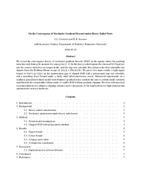
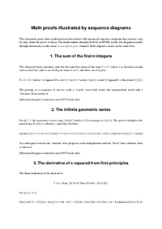
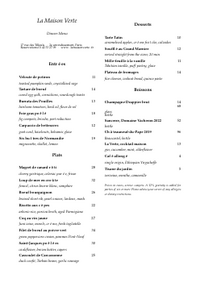
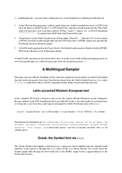
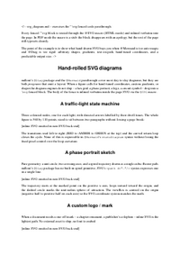

Hello1 pp
Hello from mdlout! This single paragraph is the smallest smoke test in the suite — if this page renders, the markdown → Lout → output pipeline is alive.
A visual gallery of the committed reference renderings under
examples/out/. Each thumbnail shows page 1 of the PDF
build; the links go to the full HTML render, the PDF, and the
Markdown source.
Regenerate with python3 examples/generate_gallery.py.
Thumbnails are extracted from the committed PDFs with
pdftoppm + ImageMagick convert.
Hello from mdlout! This single paragraph is the smallest smoke test in the suite — if this page renders, the markdown → Lout → output pipeline is alive.

Bullet, numbered, task, definition lists; pipe and grid tables.

This file exercises both block-level math ($$...$$ and fenced math blocks) and inline math ($...$). Real LaTeX math in every block.

Three ABC blocks of increasing complexity. The third one uses the %%score directive to lock two staves into a piano/harp grand-staff layout.

This report documents the current state of the mdlout Markdown-to-Lout converter. The toolchain is split into three layers: a single-file Python front end that parses Markdown and emits Lout source, a forked C...

This file exercises the two raw-passthrough fenced-code conventions: lout for arbitrary Lout source and svg for arbitrary SVG snippets. The latter should be routed through the @SVG macro once it lands.

This is the kitchen-sink regression document. It mixes every feature the other examples exercise into one file: headings at three levels, lists, tables, math, music, code, raw Lout, and the full inline-formatting...

We revisit the composite trapezoidal and Simpson 1/3 rules and chart their behaviour on four representative integrals, two smooth and two with endpoint singularities. On smooth integrands we recover the textbook...
Markov chain Monte Carlo (MCMC) is the workhorse of modern Bayesian computation. Given a target density $\pi$ on $\mathbb{R}^d$ known only up to its normalising constant, MCMC algorithms construct a Markov chain whose...

It had been raining for three weeks when Aliyah first noticed that the map was changing on its own. She had pinned it to the wall of her flat on the eighth of March --- a battered survey chart of the Veil basin, the...
The first letter arrived on a Tuesday, which struck Halloran as appropriate; Tuesdays were the kind of weekday on which extraordinary things were allowed to happen without anyone making a fuss about them. He had walked...
This page exercises the abc passthrough at the density a working musician's chord chart wants: chord symbols above every bar, multiple staves per piece, and -- in the last example -- a two-voice arrangement with a...

This document pushes Lout's diag package harder than diaggallery.md: a real grammar in railroad-diagram form, a binary search tree, a flowchart with mixed arrow styles, and a single diagram that combines several...

Senior audio DSP engineer with seven years of shipped real-time C++ on embedded ARM and desktop platforms. Particular focus on partitioned convolution reverberation, room correction, and low-latency scheduling....

This document exercises every documented feature of Lout's @Diag package (the diag library, from chapter 9 of the Lout User's Guide). Each example uses the lout raw passthrough fence -- mdlout does not yet have a...

Name: (write name here) Student ID: (write ID here)
mdlout converts Markdown into typeset documents by routing through Lout, a small ANSI-C document formatter. The default output is HTML wrapped around a Lout-emitted SVG; the --format=pdf flag selects the legacy...

Stochastic gradient descent is the unrivalled workhorse of modern large-scale optimisation, underpinning everything from logistic regression on tabular data to the pre-training of trillion-parameter language models. Its...

Formal US business letter built on type: doc plus raw-Lout passthrough.

When Eleanor Whitcombe first walked into the workshop in the autumn of 2023, she was carrying two things: a battered hardshell case containing the prototype of what she would later call the Lyrebird Concert Mark IV, and...
This page is set up with an extra-wide right margin (5.5 cm against the default 2.5 cm), which gives Lout's @RightNote machinery room to lay out readable annotations alongside the main column. The pattern is classic...

This document pairs short mathematical derivations with mermaid sequence diagrams that narrate, step by step, what the proof is doing. The math renders through KaTeX in HTML mode; the diagrams render through mermaid.js...

The new @Mermaid passthrough macro routes mermaid fenced code blocks through the SVG back-end's foreignObject, where the browser's mermaid.js engine engraves them at view-time. Three of the most common shapes are below;...

This page exercises mdlout's handling of three character regimes in one document: accented Latin glyphs that ride on the document's base font, Greek letters drawn from the Adobe Symbol font via @Sym, and a $...$ /...
Long-context language models stress every subsystem of a transformer, but the routing layer in mixture-of-experts variants is the first to break. At a context of 128K tokens the per-token routing cost is amortised...
A short tour of the Markdown to Lout pipeline

Numerical integration is the workhorse of applied mathematics: closed-form antiderivatives are the exception rather than the rule, and every physical simulation, statistical estimator, and engineering tolerance...

A six-slide tour of the document formatting system

mdlout's @Diag package and the @Mermaid passthrough cover most day-to-day diagrams, but they are both programs that emit a layout. When a figure calls for hand-tuned coordinates, custom gradients, or shapes the diagram...

mdlout is a single-file Python 3.10+ script with no third-party Python dependencies. The runtime requirements are a built copy of Lout (the C document formatting system, version 3.43) and -- only for the PDF pipeline --...
Numerical analysis lives in the gap between the real numbers, with which mathematics is conducted, and the finite subset of those numbers that a computer can actually represent. This chapter develops the IEEE 754...
mdlout supports the usual collection of inline spans. This paragraph mixes bold, italic, and bold italic with a sprinkling of inline code spans referring to things like argv[0] and os.path.join.